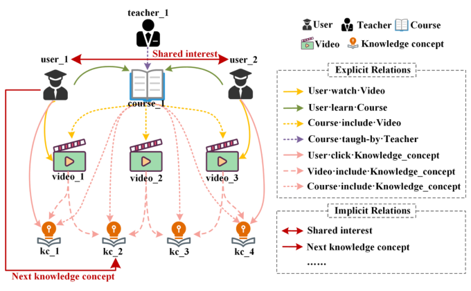

Modeling Balanced Explicit and Implicit Relations with Contrastive Learning for Knowledge Concept Recommendation in MOOCs (基于对比学习的 MOOC 显式/隐式关系平衡建模与知识点推荐)
- 会议/期刊: WWW 2024
- 作者与机构: Hengnian Gu, Zhiyi Duan, Dongdai Zhou（东北师范大学），Pan Xie（吉林开放大学）
- 推荐链路定位: 召回（为学习者返回 Top-\(N\) 知识点）
- 研究方向: 图神经网络推荐 / 自监督对比学习
- 论文原文: https://arxiv.org/abs/2402.08256v1
- 开源代码: 暂未开源
TL;DR (1分钟核心速览)
MOOC 知识点推荐长期依赖用户-知识点-课程-视频的显式单跳关系，忽略了「同课程学习者共享兴趣、同视频下点击跳转」这类更难刻画的隐式多跳关系，且显式关系在数量上远少于隐式关系，二者直接拼接会造成表示失衡。CL-KCRec 提出：用基向量关系嵌入 + 关系更新 GCN 建模显式关系，用多通道软选边 GNN 自动挖掘 \(t\) 跳隐式关系，并以「原型图 + GAT + InfoNCE」对比学习统一增强，最后用双头注意力平衡融合。在真实 MOOCs 数据集 MOOCCube1819 上按「用户级时间切分 + 1:99 负采样」评测，相对最优基线（HGCL/CoNR）在 N@5 提升 10.2%、MRR 提升 9.4%。
Background & Motivation (背景与核心矛盾)
- 主流范式: 将 MOOC 平台四类实体（User / Knowledge Concept / Course / Video / Teacher）与七类关系建成 HIN，用元路径（metapath2vec、HERec）或注意力 GCN（ACKRec）在显式边上传播表示后做点积召回。
- 前人局限: ① 显式边稀疏但语义确定，隐式边（同课程共同兴趣、同视频知识概念的补充关系）数量更多却难以从海量多类型实体组合中自动抽取；② 两类关系天然数量悬殊且语义复杂度不同，直接拼接/加权会让主导模态压倒另一侧，导致「兴趣传播」链条断裂。
- 核心洞察 (Key Insight): 显式关系可视为「少而确定」的监督，隐式关系可视为「多而含噪」的自监督信号；把二者建模为同一节点在两个关系子空间中的两种视角，用对比学习强制它们共享「内在关系知识」，即可在不引入额外标注的情况下同时增强两侧。
- 本文切入点: 用原型图把「隐式关系 = 显式关系的加权多跳组合」显式写出，再用 InfoNCE 把两种关系视角对齐，并用双头注意力做软融合以平衡贡献。

Method (核心方法设计)
1. 整体框架 (Overall Architecture)
输入是 MOOC 日志构建的 HIN \(\mathcal{G}=(\mathcal{V},\mathcal{E})\)（U/K/C/V/T 五类节点、7 类边）。显式关系模块先用 BERT 编码节点辅助文本，再用基向量关系嵌入 + 圆形相关（circular-correlation）合成的关系更新 GCN 得到\(\boldsymbol{h}_{v|er}\)；隐式关系模块把 7 个邻接矩阵当作「关系基」，通过 softmax 软选边叠加得到\(t\)跳隐式邻接矩阵\(A_{ir}\)，在多通道 GNN 上得到\(\boldsymbol{h}_{v|ir}\)。随后进入原型图对比学习：对每个用户/知识点分别聚类得到\(n\)个原型，原表示与原型全连接构成原型图，经 GAT 得到增强表示\(\boldsymbol{z}_{u|er}\)、\(\boldsymbol{z}_{u|ir}\)，用 InfoNCE 互为正/负样本对齐。最终用双头注意力对两个视角加权融合为\(\boldsymbol{h}^F_u,\boldsymbol{h}^F_k\)，点积打分并以 BPR + 对比损失联合训练。
flowchart TD
A["MOOC 日志 → HIN: U/K/C/V/T 五类节点, 7 类边"] --> B["显式关系模块: 基向量嵌入 + 关系更新 GCN"]
A --> C["隐式关系模块: softmax 软选边 + 多通道 GNN (t 跳)"]
B --> D["原型图对比学习 InfoNCE 对齐"]
C --> D
D --> E["双头注意力平衡融合"]
E --> F["点积打分 + BPR"]2. 关键设计拆解 (Key Designs)
-
基向量关系嵌入 + 关系更新 GCN（显式关系的过参数化抑制）：直接为 7 类边学独立关系向量会引入冗余参数且难以泛化到低频边。用 \(B\)个共享基向量线性组合表示任一关系：\(\boldsymbol{z}_r=\sum_{b=1}^{B}\alpha_{br}\boldsymbol{c}_b\)，再把\(\boldsymbol{z}_r\)通过圆形相关\(\varphi(\cdot)\)注入 GCN，得到\(\boldsymbol{h}_{v_i|er}^{(l)}=f_{agg}(\sum_{(v_j,r)}\boldsymbol{W}_r^{(l-1)}\varphi(\boldsymbol{h}_{v_j|er}^{(l-1)},\boldsymbol{h}_r^{(l-1)}))\)。直觉是：关系嵌入被压缩到低秩子空间，\(\alpha_{br}\) 让高频边贡献更多基权重、低频边只借用强基的共享信息，天然抗稀疏。
-
软选边多通道 GNN（隐式关系的可学习多跳组合）：隐式关系没有显式边，作者视「关系类型的线性组合」为隐式关系。用 \(1\times1\)卷积配合 softmax 对邻接矩阵做凸组合：\(F(A;\boldsymbol{W})=\sum_{i=1}^{|\mathcal{T}_e|}\alpha_i A_i\)，再逐层堆叠得到\(t\)跳隐式邻接矩阵\(A^{(t)}=(D^{(t)})^{-1}A^{(t-1)}F(A;\boldsymbol{W}^{(t)})\)；并设\(C\)个通道并行，得到多通道表示\(\boldsymbol{h}_{v_i|ir}^{(l)}=f_{agg}(\|_{c=1}^{C}\sigma(\hat{D}_c^{-1}\hat{A}_c^{(t)}\boldsymbol{h}_{v_i|ir}^{(l-1)}\boldsymbol{W}^{(l-1)}))\)。这等价于在元路径空间上做可微搜索：\(\alpha_i\)自动学到「用户-视频-知识点」等有效路径组合，\(t\) 增大时捕获更深层的跨实体语义。
-
原型图对比学习 + 双头注意力、损失与复杂度：对显式表示 \(\boldsymbol{h}_{u|er}\)做\(k\)-means 得原型集\(\mathcal{C}=\{\boldsymbol{c}_i\}_{i=1}^{n}\)，将原表示与全部原型全连接为原型图\(\mathcal{G}_{u|er}\)，经 GAT 得\(\boldsymbol{z}_{u|er}\)。InfoNCE 损失把另一视角的增强表示作为负例：\(\mathcal{L}_{u}^{cl}=\sum_{i}-\log\frac{\exp(s(\boldsymbol{h}_{u_i|er},\boldsymbol{z}_{u_i|er})/\tau)}{\sum_{j}\exp(s(\boldsymbol{h}_{u_i|er},\boldsymbol{z}_{u_j|ir})/\tau)}+\text{(对称项)}\)，\(\mathcal{L}_{cl}=\alpha_u\mathcal{L}^{cl}_u+\alpha_k\mathcal{L}^{cl}_k\)。融合端用双头注意力（跨模态映射共享\(W_v,b_v\)、注意力共享\(W_s,b_s\)）计算\(\tilde{\alpha}_{u|er},\tilde{\alpha}_{u|ir}\)后加权，最后\(\mathcal{L}=\mathcal{L}_{bpr}+\beta\cdot\mathcal{L}_{cl}\)，BPR 负例采用均匀采样。训练复杂度与 HGCL 同级：显式\(\mathcal{O}((|\mathcal{T}_e|d_1+|\mathcal{E}|)d_1L_{er})\)、隐式\(\mathcal{O}(|\mathcal{A}|Td_0L_{ir}C)\)、对比\(\mathcal{O}(((n+1)^2+N_u+N_k)db_{min})\)。
Experimental Setup & Evaluation Protocol (实验设置与评估协议)
- 数据集与预处理（MOOCCube1819，源自学堂在线，2018-01-01 至 2019-06-30 行为切片；作者未给出完整 5-core 过滤统计）：
| 数据集 | #Users | #Items(KC) | #Interactions | 稀疏度/密度 | 特征/场景说明 |
|---|---|---|---|---|---|
| MOOCCube1819 | —（见原文附录 A.1.1） | —（见原文附录 A.1.1） | —（见原文附录 A.1.1） | — | MOOC 学习行为：U/K/C/V/T 五类节点、7 类边 |
| Yelp | — | — | — | — | 商业点评，跨域泛化测试 |
| Douban Movie | — | — | — | — | 电影点评，跨域泛化测试 |
- 数据划分与防穿越 (Splitting Strategy): 采用全局时间戳切分——以 2019-03-31 为切分点，之前为训练集、之后为测试集，避免未来信息泄露。
- 排名评测协议 (Ranking Protocol): Sampled Ranking，每个测试正例随机采样 99 个负例（1 正 : 99 负）后计算打分排序；指标为 HR@{5,10,20}、NDCG@{5,10,20}、MRR。
- 对比基线与超参设置: 基线 12 个，覆盖 CF（FISM / NeuMF / NAIS）、HIN 表示学习（metapath2vec / HIN2vec / HetGNN / HERec）、HIN 推荐（ACKRec / MHCN / CoNR）、图对比学习（KGCL / HGCL）。关键超参：基向量数 \(B=15\)（MOOCCube1819）/\(B=10\)（Yelp、Douban），隐式关系跳数\(t\in\{4,5\}\)，原型数\(n=10\)（MOOCCube1819）/\(n=40\)（跨域数据集）。作者未报告显著性检验（如\(p<0.05\)）。
Key Experimental Results (实验关键数据)
1. 主实验对比 (Main Results)
MOOCCube1819 上的召回结果（H=HR, N=NDCG，加粗为最优基线）：
| 方法 | H@5 | H@10 | H@20 | N@5 | N@20 | MRR |
|---|---|---|---|---|---|---|
| NeuMF | 0.2470 | 0.4843 | 0.6757 | 0.2238 | 0.2755 | 0.2054 |
| NAIS | 0.2756 | 0.5022 | 0.7011 | 0.2591 | 0.3231 | 0.2436 |
| metapath2vec | 0.3190 | 0.5314 | 0.7252 | 0.2736 | 0.3462 | 0.2673 |
| HetGNN | 0.4208 | 0.6022 | 0.7927 | 0.3313 | 0.4241 | 0.3244 |
| ACKRec | 0.4566 | 0.6287 | 0.8159 | 0.3570 | 0.4548 | 0.3490 |
| MHCN | 0.4421 | 0.6293 | 0.8205 | 0.3568 | 0.4542 | 0.3413 |
| KGCL | 0.4584 | 0.6428 | 0.8288 | 0.3597 | 0.4610 | 0.3454 |
| CoNR | 0.4593 | 0.6462 | 0.8315 | 0.3778 | 0.4668 | 0.3687 |
| HGCL | 0.4657 | 0.6572 | 0.8364 | 0.3624 | 0.4705 | 0.3598 |
| CL-KCRec (本文) | 0.5136 | 0.6751 | 0.8417 | 0.4163 | 0.5163 | 0.4032 |
| Improv.% (vs 最优基线) | +10.29% | +2.72% | +0.63% | +10.19% | +9.73% | +9.36% |
跨数据集泛化（Yelp / Douban Movie）:CL-KCRec 均优于全部基线，但优势幅度明显收窄。Yelp 上 H@5 0.7078 vs 最优基线 HGCL 0.6983（+1.4%），MRR 0.5427 vs 0.5398（+0.5%）；Douban 上 H@5 0.5631 vs 0.5441（+3.5%），MRR 0.4035 vs 0.3922（+2.9%）。
2. 消融实验 (Ablation Study)
| 变体 | H@5 | H@20 | N@5 | N@20 | MRR | 相对 N@5 降幅 |
|---|---|---|---|---|---|---|
| w/-er（去显式关系） | 0.4762 | 0.7996 | 0.3648 | 0.4859 | 0.3738 | −12.4% |
| w/-ir（去隐式关系） | 0.4987 | 0.8255 | 0.3965 | 0.5088 | 0.3862 | −4.8% |
| w/o-cl（去对比学习） | 0.5002 | 0.8267 | 0.3987 | 0.5100 | 0.3937 | −4.2% |
| w/o-att + 拼接 (⊕) | 0.5108 | 0.8392 | 0.4147 | 0.5109 | 0.3989 | −0.4% |
| w/o-att + 相加 (+) | 0.5086 | 0.8321 | 0.4078 | 0.5067 | 0.3944 | −2.0% |
| CL-KCRec | 0.5136 | 0.8417 | 0.4163 | 0.5136 | 0.4032 | — |
注：原文主表 N@20 记为 0.5163，消融表中同型号结果记为 0.5136，两处数值存在微小不一致，推测为排版误差，不影响趋势结论。
3. 关键实验发现 (Key Findings)
-
显式关系才是 MOOC 场景的主干信号，隐式关系是增益而非替代。移除显式模块（w/-er）使 N@5 从 0.4163 跌至 0.3648（−12.4%），跌幅是移除隐式模块（−4.8%）的 2.6 倍——说明碎片化的学习行为仍是最可靠的兴趣锚点，隐式多跳更适合作为「在显式稀疏处补全」的次优信号，这与作者「隐式关系数量更多」的动机呈现出有趣的张力。
-
对比学习主要在「排序质量」而非「命中率」上发力。去掉 \(\mathcal{L}_{cl}\) 后 H@20 仅从 0.8417 降至 0.8267（−1.8%），但 MRR 从 0.4032 降至 0.3937（−2.4%）、N@10 从 0.4313 降至 0.4046（−6.2%）:原型图增强把正确知识点从列表后段前移到首位，验证了原型图是在修正「关系数量悬殊」导致的兴趣传播偏差，而不是简单地扩充候选覆盖。
-
双头注意力的收益高度依赖融合方式。与「拼接替换」相比 N@5 只提升 0.4%，但与「相加替换」相比 N@5 提升 2.0%、N@20 提升 1.4%——说明作者主张的「平衡贡献」本质上是把两个语义不同源的向量投影到共享空间后再分配权重，而简单相加会让 7 类边主导的隐式通道数值量级压过 3 类边的显式通道；同时跨域实验涨幅收窄到 1–3%，暗示该方法对 MOOC 特有的「课程-视频-知识点」三元嵌套结构有较强依赖。
Highlights & Limitations (亮点、对比与审稿批判)
- 与代表作对比 (vs. Prior Work): 相较 ACKRec（元路径 + 注意力 GCN，只建模显式边），本文补上了「隐式关系」这一块，并用软选边 GNN 把「元路径组合」从人工设计变成可微搜索，这是对 ACKRec 的实质增量；相较 HGCL（HIN 上的图对比学习），本文的对比信号不再局限于随机边扰动/特征遮蔽，而是用「原型 + GAT」构造同一节点在两个关系子空间中的语义匹配对，属于对「自监督增广策略」的重新设计；相较 KGCL（KG 上的对比学习，结构增强依赖实体/关系扰动），本文将两侧不对称的稀疏程度（显式少、隐式多）也纳入损失设计，从「增强精度」延伸到「平衡贡献」。
- 可迁移亮点: ①「基向量低秩关系嵌入」可直接嫁接到任意对边类型做线性分解的双塔/图模型上，降低低频边过参数化;②「原型聚类 + 全连接 + GAT」的对比增广不需要扰动原图，适合在只能拿到一阶邻居的工业召回场景里构造自监督正例对。
- 审稿级局限批判: ① 评测采用 1:99 负采样而非全库 Full-Ranking,100 个候选的量级可能低估排序难度与实际提升幅度（H@20 涨幅仅 0.63% 也侧面说明头部容量已饱和），且未报告多次重复实验的方差或显著性检验；② 对比学习每轮需对 mini-batch 内全部用户/知识点做 \(k\)-means 聚类与原型图 GAT，\(n\)个原型全连接使复杂度随原型数平方增长，在节点数达到千万级的真实 MOOC 平台上在线延迟与训练成本会显著高于单通道 GCN;③ 超参\(B\)、\(t\)、\(n\)的最优值随数据集规模漂移（MOOCCube 上\(B=15,n=10\);Yelp/Douban 上\(B=10,n=40\)），缺乏自适应的选择策略，线上需要对每个业务域单独调参。
Rating (四维评分)
- 方法创新性 (Novelty): ⭐⭐⭐⭐ （将「显式少、隐式多」这一不对称性显式建模为关系子空间对比，并用软选边 GNN 替代人工元路径，思路新颖且有清晰的物理直觉支撑）
- 评估协议与实验扎实度 (Protocol & Experiments): ⭐⭐⭐ （MOOCCube 时间切分合理、基线覆盖 12 个、消融与跨域实验完整，但仅采用 1:99 采样排序、缺失数据集统计表与显著性检验，H@20 提升幅度偏弱）
- 写作与数学规范度 (Clarity & Rigor): ⭐⭐⭐⭐ （HIN 定义 → 显式/隐式模块 → 对比学习 → 融合的推导链完整，复杂度分析到位；但主表与消融表中同一数值出现 0.5136/0.5163 的不一致，个别公式排版存在乱码）
- 工业落地与复现价值 (Industrial & Practical Value): ⭐⭐⭐ （整体框架与 LightGCN 系 GCN 思路兼容、可增量接入现有 HIN 召回链路，但原型图全连接与逐 epoch 聚类带来额外训练开销，且代码未开源，复现成本较高）